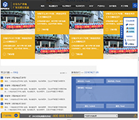

姓名:胡广健
性别:男
求职类型:web前端
教育经历:2015-2018安徽新华学院
专业:计算机应用
QQ:731445048
手机:17775300792
邮箱:731445048@qq.com
专研专业知识
运动
技能水平
1.
精通ps、cutterman、sublime、vsc、hbuilder等网页制作工具
2.
精通Div+CSS布局能够独立完成静态网页编写工作，精通javascript,html5,css3,jq等特效
3.
精通利用mui框架和SASS/LESS语言写出响应式移动端
4.
熟悉php等后台语言
5.
熟悉Vue.js
6.
熟悉基于ajax技术的开发应用
7.
熟悉前端常用插件
8.
面试可提供近期作品

工作经验
上海珍宝岛2017-06至今(web前端)
项目经验:
pc端运用:javascript、jQuery、HTML5、css3
手机端运用:sass、less
pc端:京东商城首页、英雄联盟网页、江淮汽车网、宇峰网页、科技农业、穷游网、花瓣专题页
手机端:金宝贝早教、方博雅肥鲜生、苏宁首页、淘宝首页
bootstrap:户外运动网页、摄影展网页